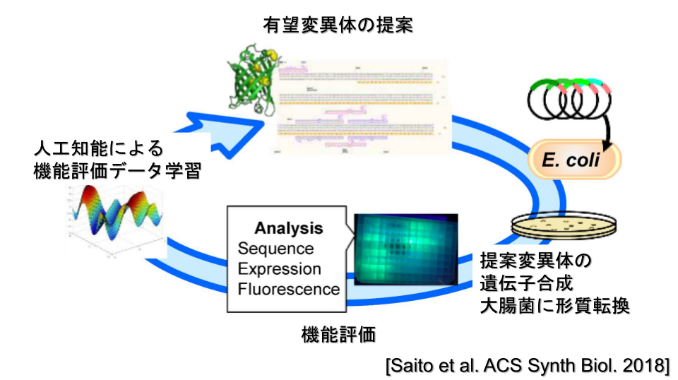
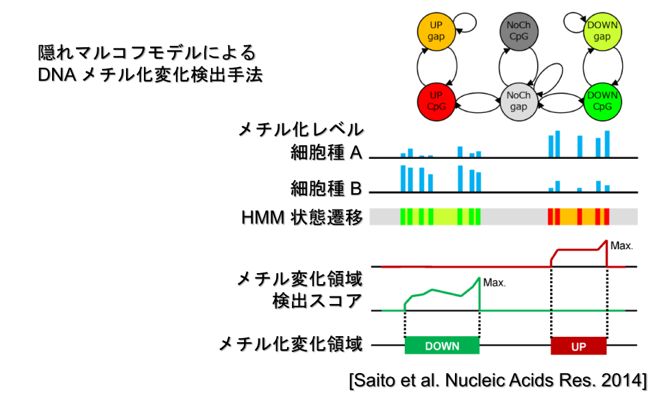

Bioinformatics for Bioengineering
私たちは、機械学習やバイオインフォマティクスなどの情報科学的アプローチに基づき、大量データの解析から生命を理解すること、その知見を生体分子の設計や制御へ応用することに興味を持っています。最近では、実験ロボットを使ったバイオ実験の自動化にも興味を持っています。
機械学習に基づく生体分子設計と機能改変：タンパク質、mRNA、プロモーター
これまで抗体や酵素などの機能性タンパク質の開発は、低機能な野生型タンパク質にランダムな変異を導入して機能を改善していくというトライアンドエラーによって行われてきました。我々はタンパク質の機能改変を効率化するために、機械学習手法の一種であるベイズ最適化を用いてタンパク質の機能向上変異を予測する手法を開発しました。また、実験系ラボとの共同研究により、緑色蛍光タンパク質（GFP）を黄色蛍光タンパク質（YFP）へ改変する問題に本手法を適用して、既知YFPより長波長で蛍光強度も高い新規YFPを多数発見することに成功しました（図）。最近では、微生物による物質生産の効率向上を目的として、翻訳効率の高いmRNAコドン配列の設計や、転写活性の高いプロモーター配列を設計するための情報技術の開発も行っています。
オーミクス情報解析技術：DNAメチル化からゲノム3次元構造まで
高速シーケンサーによって得られる様々なオーミクスデータから有用な知識を発見するためのアルゴリズムを開発しています。これまでに開発した手法として、配列データから特定の機能性RNAファミリーを探索する手法BPLA Kernel、DNAメチル化データ（bisulfite-seq）をサンプル間で比較してメチル化変化を検出する手法ComMet（図）、ゲノム3次元構造データ（HiC-seq）から遺伝子の空間的な共局在を発見する手法Coseargeなどがあります。また、開発した手法の有効性を実験系ラボとの共同研究において実証することも行っています。例えば、BPLA Kernelは線虫のsnoRNAファミリーの探索に使用され、ComMetは脂肪細胞分化におけるエピゲノム変化の解析に使用されました。最近では、バイオ産業の物質生産に利用される細菌やカビ類のメチル化解析も行っています。
